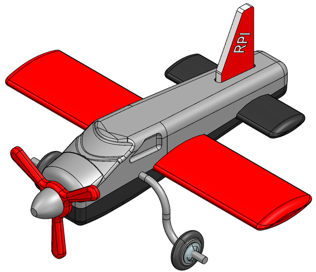
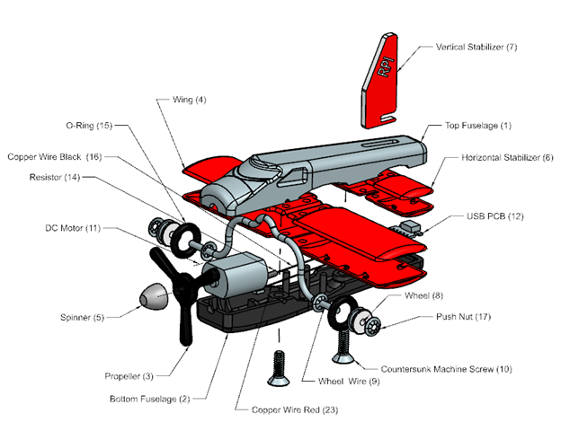
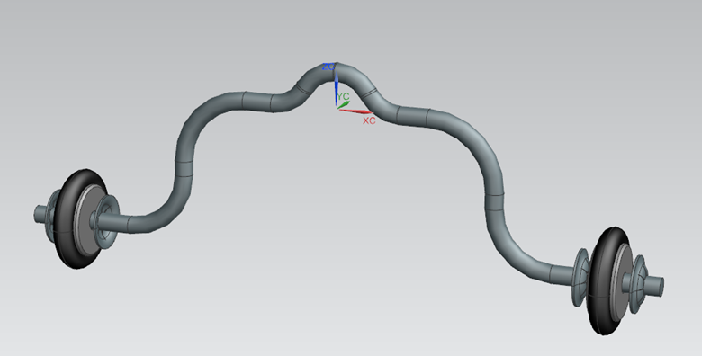
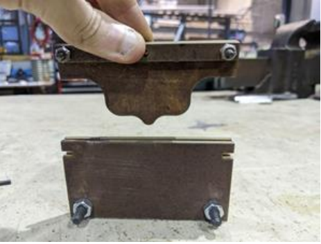
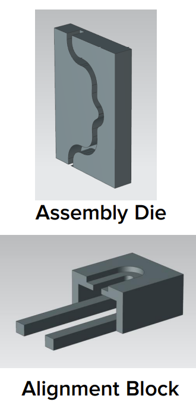
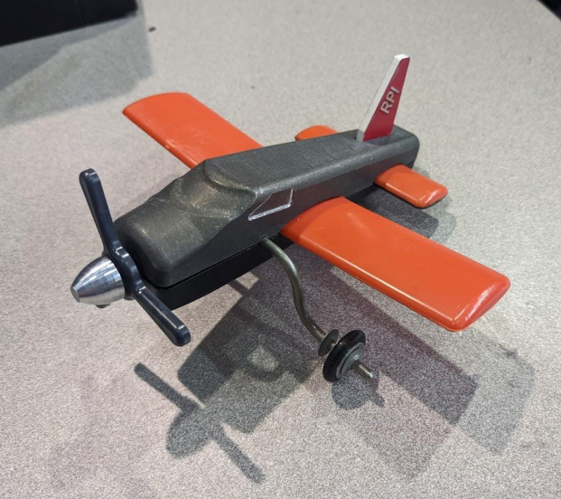
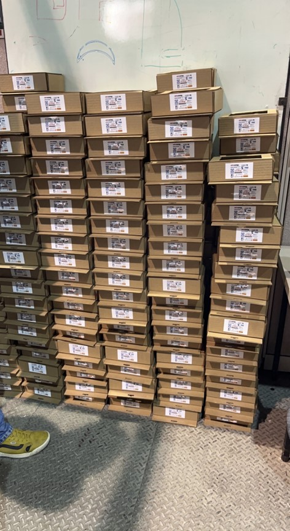

Airplane Manufacturing Project
Our project was commissioned by Mr. Santa Claus, who needed RPI expertise to manufacture 300 toy airplanes within a semester. This project was developed as part of the Manufacturing Processes and Systems (MPS) Lab I and II courses at RPI. Our task was to design and manufacture 300 toy planes as part of a 12-person team. The objective of these courses is to teach students Design for Manufacturing techniques, provide experience using industrial machines such as Injection Molders, CNC machines, and Pick-and-Place robots, and develop skills to design and manufacture large quantities of a product, including engineering, management, and teamwork skills.
For the Fall semester when I took MPS I, my team designed a plan to manufacture 300 toy rockets. However, our group was not chosen to continue the project in the spring, so I was placed on the Airplane team for MPS II. A CAD model of the completed airplane is shown below along with a diagram labelling all the components of the airplane.
 My first task was to design tools to manufacture 300 wheel wires. The wheel wire in its desired final state is shown below.
 I worked on this task with a peer to accelerate the process. We decided to manufacture the wheel wires out of 1/8” 304 Stainless Steel for its sturdy characteristics, weighted feel, and resistance to corrosion. The first operation we performed was to cut the wires to length using a Foot Shear. The wire ends were then rounded using a grinding wheel. Then we decided to bend the wires to their desired state using an Arbor Hand Press. We designed a die to contain the wires during the bending process, robustly and efficiently secure the wires in the die, and easily press them using the Arbor press lever arm. We used a Waterjet and a mill and lathe to machine the die. After several prototypes, and correcting for spring-back and other complications, we developed a die that was used to bend 300 of the wires. However, the die slowly eroded by the end of the process and the final wires were not produced nearly as correctly as the initial wires. Future improvements would need to have been made to make the process more repeatable, such as modifying the process into a two-step bending operation, using tool steel rather than mild steel for the die, and using a hydraulic press to automate the operation.
After the wires were bent, the wheels needed to be securely attached to the wire. We found that using a drill press chuck to press the push nuts onto the wire was the most effective method because of its rapid processing time, so we designed an assembly die to secure the wheel wires for the assembly process. The design employed an alignment block to align the wheels and the push nuts to the wire and an assembly die to fix the wire during the assembly. We used an FDM printer to manufacture the dies because of the complicated nature of the design. As a result, the alignment block fractured once and needed to be replaced. The 300 wheel wire assemblies were assembled without much issue, but the process took longer than desired, with each assembly taking around 1 minute to complete. Future implementations would either manufacture the alignment block out of a more durable plastic or it would need to be optimized with thicker extrusions to withstand the forces of the assembly process.

After our team was finished manufacturing the wheel wire assemblies, our next task was to ultrasonically weld the two halves of the injection molded wings and horizontal stabilizers of the airplane together. We envisioned using pick-and-place robots to perform the task, but problems with consistency gave us trouble. Even slight perturbations in the process would cause it to fail. However our team was determined, and after tuning the assembly fixtures and everything involved in the process, we ended up with a relatively robust process, with the automated operation successfully assembling approximately 85% of the parts. However, the process needed to be slow, so in the end a combination of manual and automated labor sped up the process to finish within a set timeline. Pictured above is the fixture used to maintain the initial positions of the injection molded wings that were then picked up by the robot end effector.
An example of a finished plane and a stack of packaged planes can be seen below.
 For more information follow this link:
Final PresentationContact Me
Email (preferred contact method): michael.aksen@gmail.com
Phone #: 201-982-1776